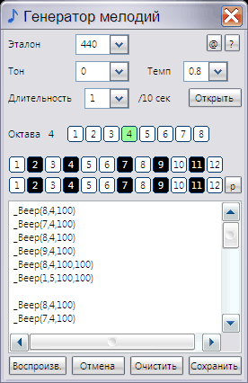

melodies_beep
Назначение
Генератор мелодий - игрушка созданная на этапах изучения программирования. Использует пищалку в компе.

The_generator_of_melodies - музыкальная программка, которая поможет создать мелодии для системного динамика ПК.
Скрипты можно выполнять с помощью командной строки (пример Start_melodies.bat) или встроить в свои скрипты программы построенные на AutoIt3.